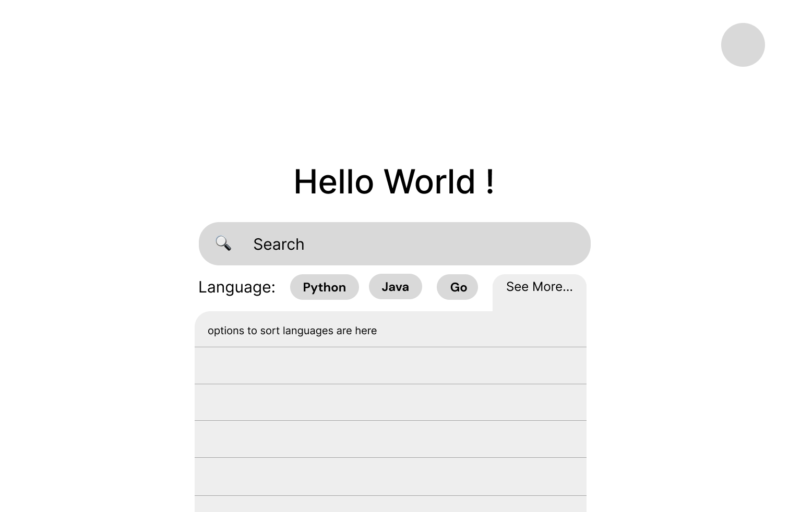
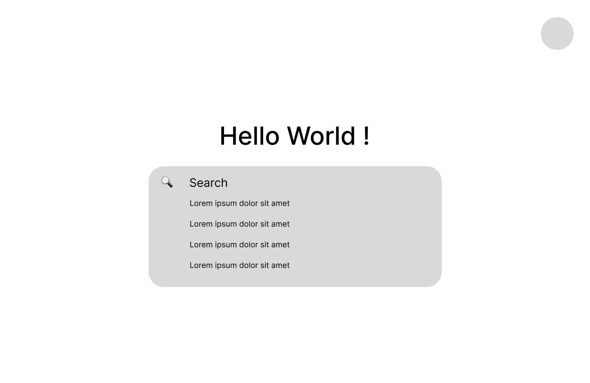
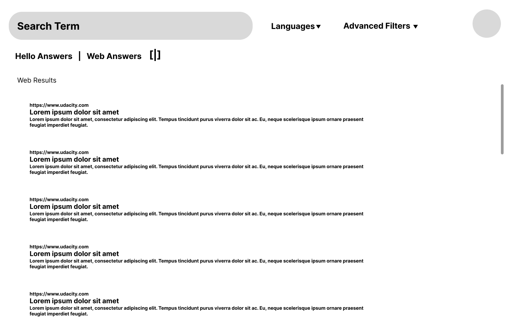
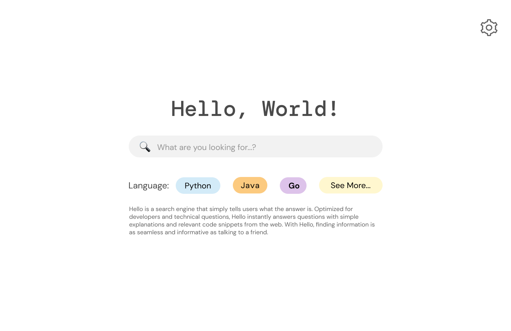
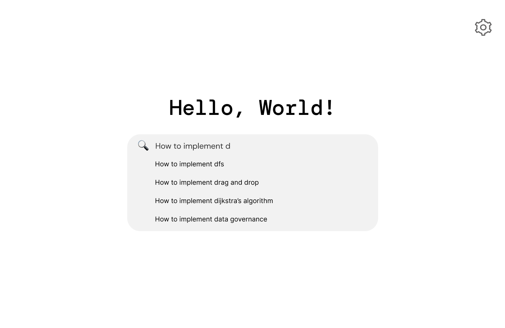

Iterative Design
Case study of Hello
Iterative Design is a project my group and I have done as a part of our CSCI1300: User Interface and User Experiences course at Brown University. Our task was to design an interactive interface for an emerging startup, going through the full process of mocking up a solution to the startup's concept. We chose hello as our startup.
Sketching & Wireframing
Pre-design Thinking
Hello is a search engine that is optimized for developers and technical questions. It answers questions with simple explanations and code snippets from the web instantly. Hello uses Ai language models to quickly generate answers based on multiple resources.
The intended audience of hello consists of developers and computer science students/ professionals. They can use hello to receive fast answers to their technical questions. Because of the coding nature of the startup, we chose to design a desktop interface.
The intended audience of hello consists of developers and computer science students/ professionals. They can use hello to receive fast answers to their technical questions. Because of the coding nature of the startup, we chose to design a desktop interface.
Sketching
To get the ideas flowing, our group made some quick hand-drawn sketches. We came up with four different possible designs for our startup’s design.
Synthesis
After the initial sketching, we came up with a new design to demonstrate our startup company's goals in the best way possible. We wanted our design to be simple, intuitive, and easy to use. We choose the split screen design to provide all the tools necessary for the developers. Furthermore, we wanted a clean yet unique look, which separated our startup’s project from other search engines available. Below is a low-fidelity wireframe of our design.






Mockups
Using Figma, we created an interactive high-fidelity prototype. While making our design, we choose a clean look with minimal distractions. We chose our fonts to reflect the startup's technical nature. We paid special attention to text hierarchy and color scheme to make our page easy to read and navigate. By using contrasting colors, such as black text on a blue background, we made the font more visible so that anyone could read the website. We chose to use icons on our website to express possible actions, such as bookmarking and history, to grab the user's attention and help the users find the content they are looking for. We made sure to use icons that the user can easily understand. We added a split screen option for users to view ‘Web Answers’ and ‘Hello Answers,’ which are generated simultaneously by hello’s AI algorithm.



Critique in Studio
During Studio time, we asked for peer critiques to identify potential problems with our high-fidelity mockup. Below are some issues that were identified:
- We have to have more consistency between different display options
- There should be a way to go back to home page
- Hello’s logo should always be on the page
- There were some problems with the text hierarchy
- There should be a way to bookmark answers
- There should be a way to see recently visited pages
- The split screen icon should be changed to be more explicit
Updated High-Fidelity Frame
Changes we made:
- Added a logo, which acts like a “home” button
- Added a heading to clear up what the source links are
- Made all “source” buttons explicit link buttons
- Fixed font hierarchy problems
- Added text to the “split screen” icon to make it clearer
- Highlighted the selected display option
- Changed the “languages” tab to be consistent on all pages
- Added a bookmark icon next to the answers + Added a bookmarks and search history icon
- Changed display from “click” to “hover” to see the list of all the programming/markup languages
Final Concept
User Testing
The Task
We asked the users to imagine themselves as a computer science student and search for “how to implement Dijkstra’s algorithm” by following some task instructions which we have given. We asked them to verbalize their thoughts throughout the testing process. We informed them that they would not be using an actual website but instead testing an interactive mockup.
Testing Instructions
- Without leaving the homepage, what are your initial impressions of the design and the functionalities available? Be specific.
- Start your search by choosing Java as your intended language. Tell us how you selected it. Comment on the intuitivity of this step.
- Search “How to implement Dijkstra’s algorithm” by clicking the correct suggestion in the dropdown menu.
- Scroll through the pages. Comment on the dual layout of the search results. Describe in your own words how you might benefit from using this page.
- Navigate to “Web Answers.” Comment on the design of this page.
- Change your display to “Hello Answers.” Describe what you expect to find on this page. Comment both on the design and benefits of this view.
- Go to the first referenced source link.
After the users completed all of the tasks, we asked them to answer some post-test questions. The questions were the following:
- What frustrated you most about this site?
- If you had a magic wand, how would you improve this site?
- What did you like about the site?
- How likely are you to recommend this site to a friend or colleague (0=Not at all likely, and 10=Very likely)? Why or why not?
Analysis of Results
Overall, our UserTesting results were in line with our expectations. The users didn't have difficulty in completing the tasks and found our design intuitive.
Task 1 indicated that users understood the homepage layout and purpose, though minor feedback surfaced about adding a profile button. Task 2 feedback suggested adding more languages to the mockup and displaying language change options after selection. Task 3 and Task 4 were both deemed intuitive, with users finding the split screen effective, but there were differing opinions on the placement of web answers. Task 5 revealed users' ease in locating web answers, while differing preferences emerged concerning similarity to Google. Task 6 highlighted a preference for 'Hello Answers' over 'Web Answers', and users appreciated the algorithm's responses, suggesting a 'see all answers' button. Lastly, Task 7 showed unanimous agreement on the ease of accessing the first source link.
Task 1 indicated that users understood the homepage layout and purpose, though minor feedback surfaced about adding a profile button. Task 2 feedback suggested adding more languages to the mockup and displaying language change options after selection. Task 3 and Task 4 were both deemed intuitive, with users finding the split screen effective, but there were differing opinions on the placement of web answers. Task 5 revealed users' ease in locating web answers, while differing preferences emerged concerning similarity to Google. Task 6 highlighted a preference for 'Hello Answers' over 'Web Answers', and users appreciated the algorithm's responses, suggesting a 'see all answers' button. Lastly, Task 7 showed unanimous agreement on the ease of accessing the first source link.